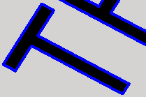

<div id="engrave_group_geometry"><p>エッジまたはスケッチを使用して彫り込む輪郭を選択します。連続する形状は自動的に連結されます。このツールパスには閉じた境界が必要です。</p>
<table class="tipTable" cellspacing="10">
<tr>
<td><center></center></td>
</tr><tr>
<td><center><p><b>閉じた領域を選択します</b></p></center></td>
</tr></table>
</div>